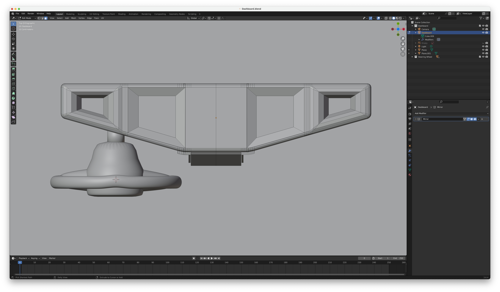
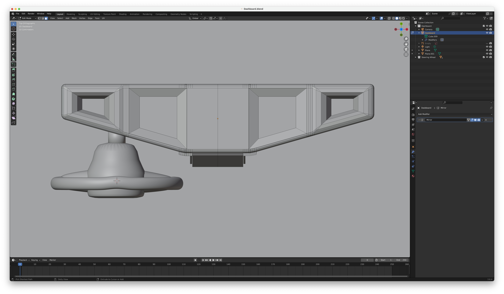

Creating a GEM Dashboard in Week 7
Process
Went for it on my own
I didn't end up using a tutorial to build this, at least so far! I learned a lot in the Lego Minifig build that I did prior and displayed my knowledge here. I'm still going to add buttons, and a fw more details but I purposely do not want to add color to it. I want it to stay as a "clay" model.
My Learnings
Keeping track of where I am at is a lot easier than when I started. Having the use of front, and side angles, etched into my brain really helped me understand how to build proportiately.
Photos
I took screenshots of the my progress so far below!


 
